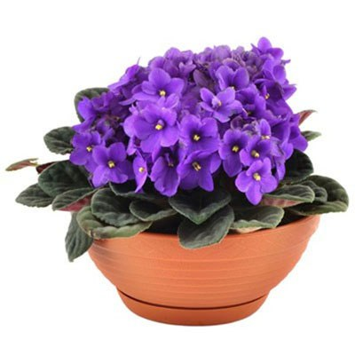

Фіалка триколірна має тонкий, стрижневий малогіллястим, буруватий корінь, який майже прямо входить в землю. Стебло звичайне гіллясте, тригранне, голе або опушене, з відігнутими вниз волосками, порожнє усередині; нерідко від кореня відходять декілька прямостоячих або сланких стебел. Листя почергове, просте, черешкове, голе або по жилках розсіяно-волосисте.
Нижнє листя з досить довгими черешками, верхнє — довгасто-ланцетне, сидяче з короткими черешками; прилисники по два при кожному листку, перистоліровидне, довше листкових черешків. Квітки поодинокі, неправильні, зигоморфні, сидять на довгих, трьох- або чотиригранних, голих або злегка опушених, нагорі загнутих квітконосах, що виходять поодинці з листових пазух.
Пелюстки коротше чашолистків або ледь їх перевищують. Нижній пелюстка майже округлий, має короткий, що не перевищує довжини придатків чашолистків шпорец, в якому збирається нектар, що виділяється двома нижніми тичинками. Верхні пелюстки ланцетоподібні, бічні - спрямовані вгору. Плід - трехстворчатого коробочка. Семена гладкі, жовтувато-коричневі.